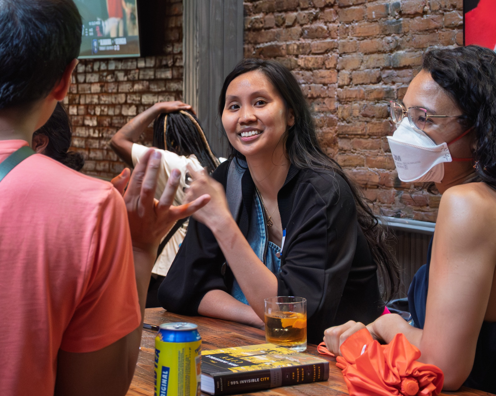
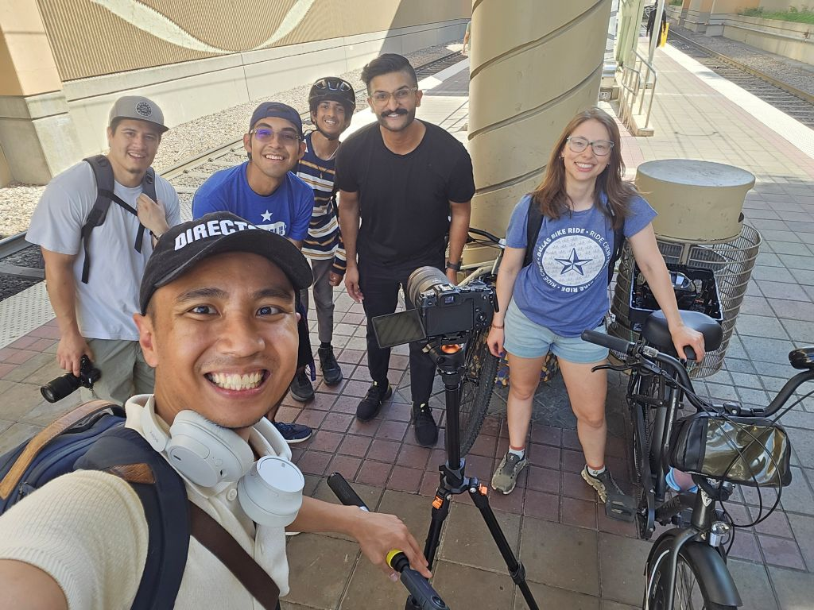

Our nonprofit needs $5,400/month to be financially stable. To unify our monthly, annual, and one-time donations, we're offering virtual bricks! You can donate a brick for $20 monthly, $200 annually, or $250 one-time. Our goal is to have 270 bricks donated by May 31st.
Make a donation View virtual brick road
Here is how your tax-deductible* donation fuels the growth of our movement in Dallas.
Target Budget: $5,400 per month / $32,700 cash on hand

Our vision is to organize a hyperlocal conversation — monthly gathering of neighbors to explore ways to improve walkability where they live — in every single neighborhood in Dallas. This ambitious vision requires a core team focused every day on finding and coordinating volunteers and leaders across the city. At this stage, every dollar goes toward:
Target Budget: $11,600 per month / $70,000 cash on hand

To accelerate our growth and expand our reach, we aim to increase daily production of educational content, which will complement and aid our hyperlocal conversations, and collaborate more frequently with local partners. Your donations will support:
Target Budget: $22,500 per month / $153,000 cash on hand
Our vision is for Dallas Urbanists to become a household name and the go-to resource for practical guidance on all matters related to local urbanism. We also want to be a role model for sustainable advocacy by showing the same care for our staff’s well-being that we show for our city.
Target Budget: TBD
When we formed our nonprofit, most advocacy groups only had capacity to react to change, rather than be proactive. Our vision is instead of waiting for DART to propose service changes, neighborhoods are proactively planning and requesting new and improved routes; instead of waiting on the city to propose painted bike lanes, residents are demanding protected ones; instead of mobilizing against proposed skyscrapers, locals push community-led plans for incremental density.
Our board has yet to develop a budget for this growth phase. When we do, some items we may consider include:
Dallas Urbanists is a nonprofit registered in Texas, officially established on December 1, 2025. Our federal EIN is 41-2861715, and checks can be made out to "Dallas Urbanists." Our official mailing address is:
5473 Blair Rd Ste 100 #901491 Dallas, TX, 75231 USA
*Dallas Urbanists applied for 501(c)(3) status in February 2026 and is awaiting IRS approval. Once approved (expected in Q3-Q4 2026), all donations made since our formation in December 2025 will be retroactively tax-deductible. We will notify all donors via email as soon as we receive our confirmation letter from the IRS.
For all inquiries, please email contact@dallasurbanists.org.